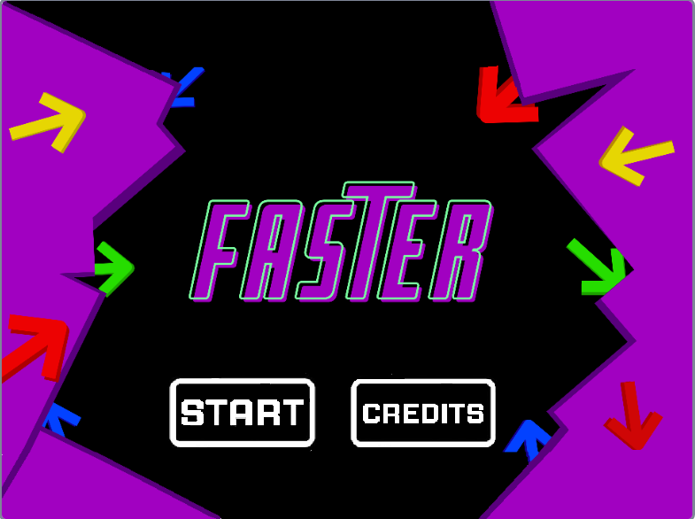

3 Jogos diferentes do Scratch, confira e se sinta um Scratcher!
Fácil
Jogo da memória:
Teste suas habilidades de memória com o Fruits Memory! Aprenda sobre os hardwares um computador em níveis diferentes de dificuldade e de uma forma diferente!
Médio

Faster:
Com o Faster, utilize sua agilidade e foco como peça chave para ganhar! Jogue contra seu amigo e veja quem acertará mais cores, em diferentes níveis de fase!
Difícil
Guitar Hero:
Já sonhou em ser um mestre na guitarra e tocar rock? Com este jogo com diversas bandas icônicas e suas músicas de sucesso, se torne um guitarrista, acertando todas as notas, possuindo vários níveis de dificuldade!